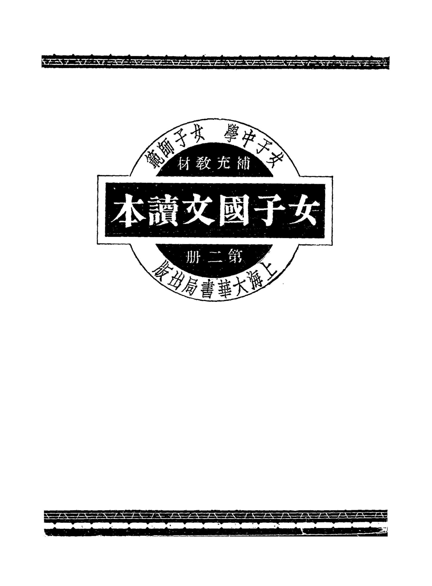

Occurrences
5
Exact minzu hits in this book

Textbook
This view contains all KWIC results for 民族 in this book, followed by the book's individual frequency result.
This table lists every minzu KWIC result found in this textbook.
| No. | Left context | Keyword | Right context |
|---|---|---|---|
| 421 | 關於女子德性的,以涵養高尙的性;情冖二)切於女子實用的,以資置身家庭或服務社會的應;用(三)關於陶冶 | 民族 | 精神的,以養成健全勇敢的女性。四、本書文體,語體文佔三分之;二文言文佔三分之一。第一册爲語七文三,第 |
| 422 | 荒涼,是壯觀!人們許是畏忌梁|武帝〇的幽魂來纏擾的緣故吧,都不肯來與這奪魄驚心的古城相接近。然而我們 | 民族 | 精神的偉大更在何處這樣塊然流露在宇宙之間?呢!嗄我們的脚踏着的是什?麽豈不是千千萬萬萬萬千千,無量數 |
| 423 | 山巓上。一目無涯的望下來,那豈不更能代表他那將全人類一視同仁三的氣魄嗎?間接的豈不更代表我們大中|華 | 民族 | 的偉大精神嗎?一個時代的民族精神的發揚光大常是在它的紀念勝蹟上面看得出來,在這上面多花幾百萬銀錢確是 |
| 424 | 豈不更能代表他那將全人類一視同仁三的氣魄嗎?間接的豈不更代表我們大中|華民族的偉大精神嗎?一個時代的 | 民族 | 精神的發揚光大常是在它的紀念勝蹟上面看得出來,在這上面多花幾百萬銀錢確是値得的事!這建築的本身雖然也 |
| 425 | 德一心,羣策羣力,謹遵誓言,以竭盡全力,救濟敎養今日中|國之兒童,努力做去,近爲家庭社會之基礎,遠爲 | 民族 | 國家之根本,當亦政府之所樂觀厥成也。明年爲兒童年,願我同人努力慈幼事業,仰贊政府,追隨世界列强,以期 |
Occurrences
5
Exact minzu hits in this book
Analysis chars
75,728
Cleaned characters used as denominator
Per 10k chars
0.66
Normalized frequency
| Subject | Language Readers |
|---|---|
| Textbook | 女子国文读本（第二册） |
| Keyword | minzu (民族) |
| Raw occurrences | 5 |
| Occurrences per 10,000 analysis characters | 0.66 |